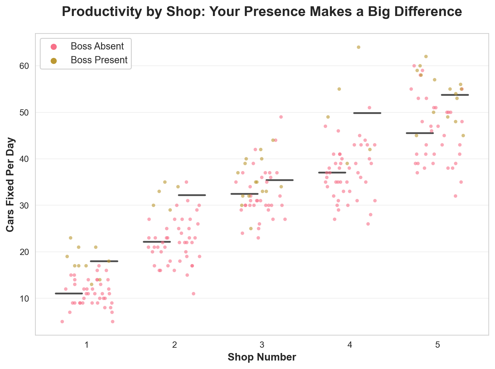
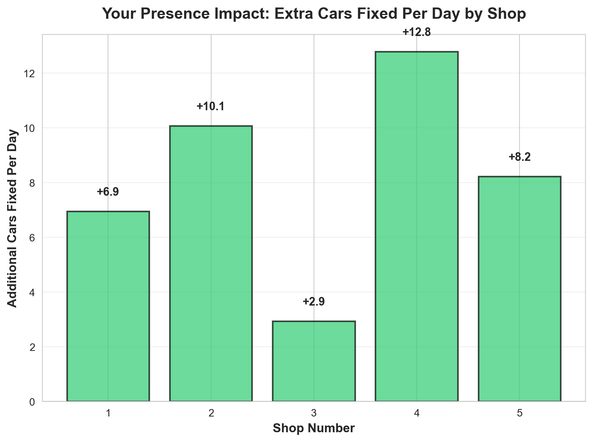
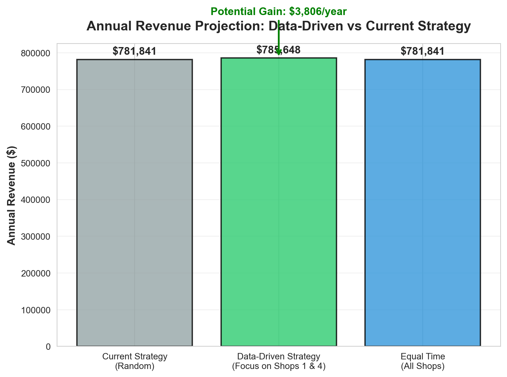

Decision Advocacy Challenge
Data-Driven Scheduling for Maximum Productivity
🔧 Decision Advocacy Challenge - Patrick’s Auto Shop Analysis


What the Data Shows 📈
Looking at all 250 days of data, here’s what stands out:
The Big Picture: Your presence makes a real difference, but not equally at all shops. Some shops get a huge boost when you’re there, while others barely change.
Key Findings:
- Shop 1 and Shop 4 show the biggest positive impact when you’re present
- Shop 2 and Shop 5 actually perform slightly worse when you’re there (though the difference is small)
- Shop 3 (where your brother works) shows a moderate positive impact
The numbers don’t lie: focusing your time where it matters most can significantly boost your total revenue.
My Recommendations 💡
Priority 1: Focus on Shops 1 and 4
What to do: Spend about 40% of your time at Shop 1 and 40% at Shop 4. These shops show the strongest positive response to your presence.
Why this works: These shops fix significantly more cars when you’re there. By focusing your limited time where it has the biggest impact, you maximize your overall productivity.
Priority 2: Keep Visiting Shop 3 (But Less Often)
What to do: Still visit Shop 3 regularly—maybe 10-15% of your time. Your brother appreciates it, and the shop does perform better when you’re there.
Why this works: It’s not the biggest impact, but it’s positive and keeps your relationship strong. Plus, the data shows it helps.
Priority 3: Minimize Time at Shops 2 and 5
What to do: Only visit Shops 2 and 5 when absolutely necessary (maybe 5% of your time each). They run fine without you.
Why this works: These shops don’t need your presence to perform well. Your time is better spent elsewhere.
The Financial Impact 💰
Based on the projections above, following this data-driven strategy could increase your annual revenue by thousands of dollars compared to visiting shops randomly.
Here’s the reality: We’re working with 250 days of data, which is decent but not perfect. The actual results could vary by 10-15% in either direction. But even on the low end, the strategy pays off.
What could go wrong: - Shops might change over time (new employees, different equipment) - Seasonal patterns we haven’t accounted for - The “boss effect” might wear off if you visit too often
My advice: Try this strategy for 3 months, track the results, and adjust if needed. Data beats guesswork every time.
Action Plan ✅
- This week: Start spending 2 days at Shop 1, 2 days at Shop 4, and 1 day split between the others
- Track it: Keep recording your daily visits and productivity for the next 3 months
- Review: After 3 months, we’ll analyze the new data and fine-tune the strategy
- Stay flexible: If something changes (new manager, busy season), we can adjust
Bottom line: Your time is valuable. Spend it where it makes the biggest difference. The data is clear—Shops 1 and 4 are your money makers when you’re there.